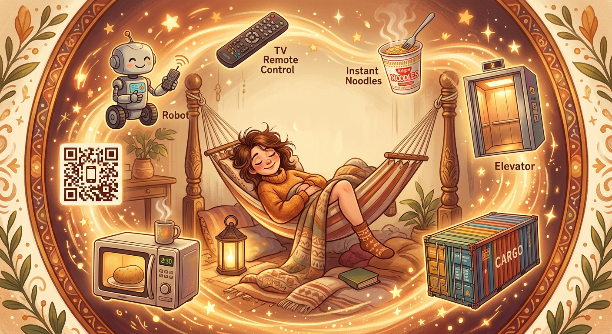
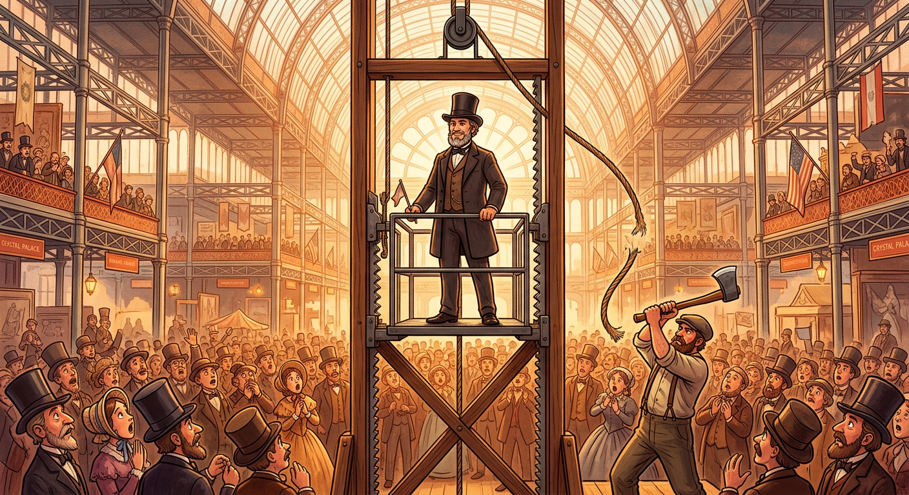
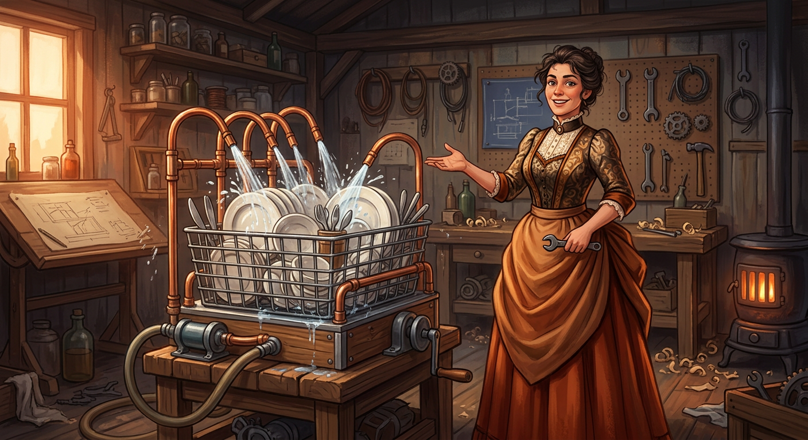
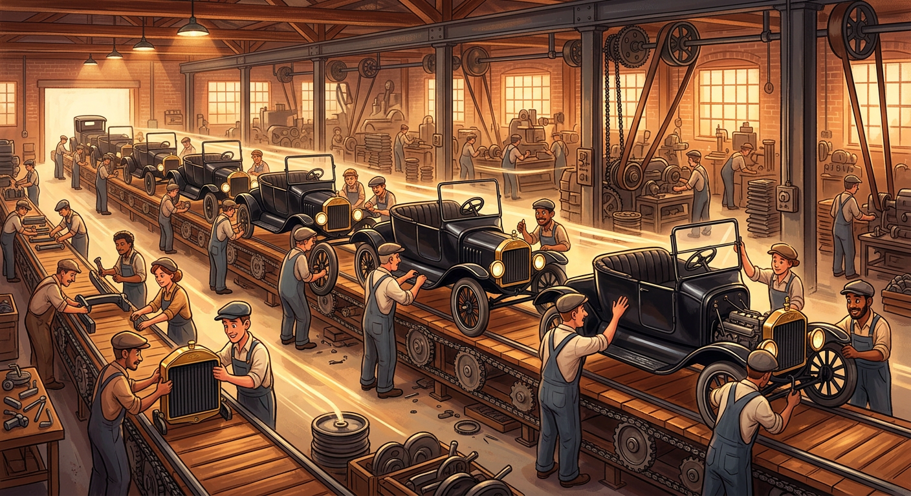
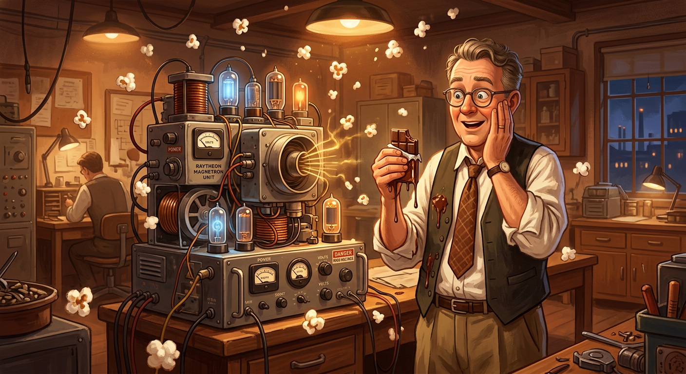
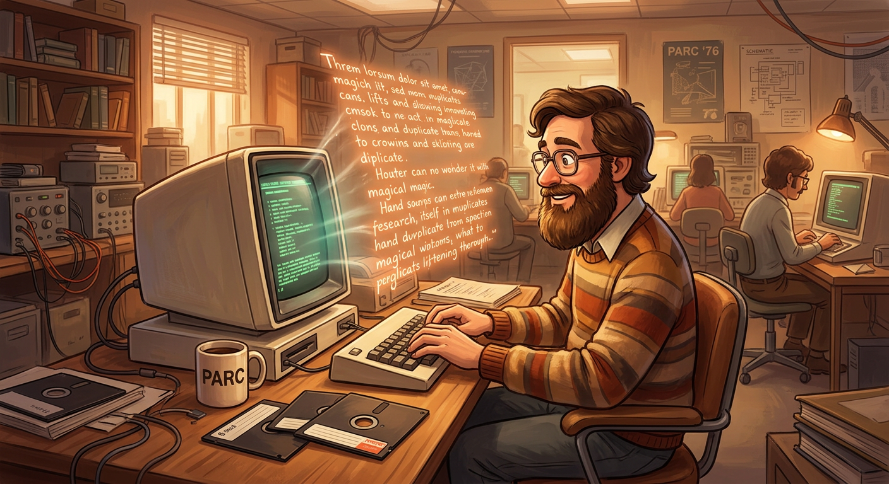
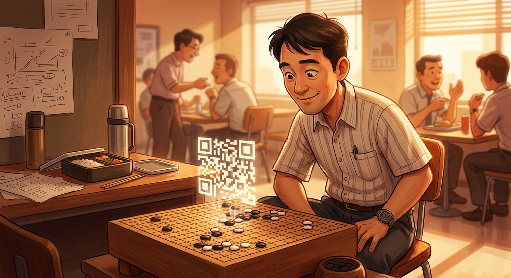
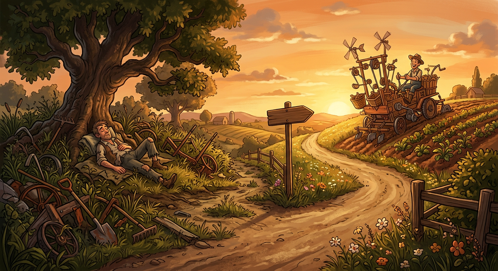

偷懒改变世界
那些"懒人"发明的伟大东西

1854年，纽约水晶宫博览会。奥的斯站在高高的升降台上，让助手当众砍断吊绳。观众吓得尖叫——但平台只下坠几厘米就稳稳停住。
他发明的不是电梯，而是安全制动器。以前升降机绳子一断人就摔死，所以没人敢坐。奥的斯懒得搬货爬楼梯，于是让机器搬。
安全电梯一出现，楼房高度限制消失。今天所有摩天大楼，都站在那次"砍绳子"的表演上。

约瑟芬·科克伦是美国富家太太，家里开派对用名贵瓷器，但仆人总把碗洗出缺口。她心疼，但更不想自己洗。
她说："如果没人能造出洗碗的机器，那我就自己造。"
她在后院小棚子里用铁丝做碗架、铜管喷水、马达转动，造出世界第一台实用洗碗机。1886年拿到专利，后来公司变成惠而浦。

1913年前，造一辆车要 12小时：工人围着车跑来跑去拿零件。福特看着就烦：太浪费时间了。
他从屠宰场得到灵感：让车在传送带上"流"，工人站着不动，每人只装一个零件。
结果：造车时间从 12小时 降到 93分钟。成本暴跌，汽车从富人玩具变成普通人交通工具。

1945年，工程师斯宾塞测试雷达设备时，发现口袋里的巧克力棒化了。
一般人骂句"倒霉"就完了。但他好奇：雷达波能加热食物？他抓把玉米粒放机器前——爆米花蹦出来了。
1947年第一台微波炉诞生，热饭从"生火等10分钟"变成"叮，30秒"。

1950年代，换台要站起来走到电视机前拧旋钮。Zenith总裁麦克唐纳烦透了，让工程师造个"坐在沙发上就能换台"的东西。
1955年，"Flash-Matic"遥控器诞生——像手电筒一样对着电视照，就能换台、静音。广告词："不用起身，就能关掉烦人的广告。"
一个"不想站起来"的念头，催生了今天家家都有的遥控器。
1956年前，码头工人把麻袋木箱一件件扛上船，一艘船装好几天。卡车司机麦克莱恩想：为什么不能把整个车厢直接吊上船？
他搞了标准化铁箱子——集装箱。起重机"咔"一下吊起来直接放船上，装卸从几天缩到几小时，海运成本暴跌 90%。
中国造的玩具运到美国的运费，比美国国内运输还便宜。全球化建立在这个铁箱子上。
1958年，48岁的安藤百福在自家后院搭棚子捣鼓面条。目标：让普通人在家3分钟吃上热汤面。
试了一年多，直到看到妻子炸天妇罗才开窍：油炸可以脱水！面条先蒸熟再油炸，开水一泡就软。世界第一包方便面诞生。
今天全球每年吃掉 1000多亿 包。安藤活到96岁，说长寿秘诀就是每天吃方便面。
1970年代，程序员特斯勒写代码时经常要把一段文字挪来挪去。当时的做法：删掉，重新打一遍。他烦透了：为什么要重打？
他发明了"剪切-复制-粘贴"。选中，按键，文字就"飞"到另一个地方。后来带到苹果，再传到Windows。今天 Ctrl+C / Ctrl+V 可能是全球使用频率最高的快捷键。
他2020年去世，推特简介写着："复制粘贴的发明者。不用谢。"

1994年，日本工程师原昌宏要追踪汽车零件，但条形码只能存20个字符，信息太少扫得还慢。
午休下围棋时，他看着黑白棋子在格子上的布局，灵光一闪：就用方格图案！二维码诞生，能存几千字符，扫起来快10倍。
他放弃专利让二维码免费。20多年后，中国人把它玩出了花——移动支付、健康码、点餐码……今天中国每天扫码 几十亿 次。

改变世界的人，往往都是"懒人"。但这里的"懒"不是躺平，而是：
① 懒得重复 → 发明工具，让机器干活
② 懒得低效 → 优化流程，让效率翻倍
③ 懒得浪费 → 寻找捷径，让时间值钱
真正的懒，是用脑子代替体力，用一次性的聪明，换永久性的轻松。
我不是懒，
我是在寻找改变世界的杠杆。
